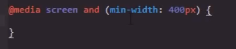
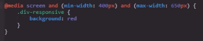

Responsive Desing
Se trata de un planteamiento de diseño en el que las paguinas web se estructuran de forma que puedan adaptarse a cualquier dispositivo desde el cual estas puedan llegar a ser visualizadas, para lo cual se aplica una serie de ptopiedades y recursos enfocados en reslover este tipo de problematicas.
Dentro del conjunto de propiedades y recursos utilizados para desarrollar el responsive desing se encuentran:
- Estructuras Flexibles
-
- Contenedores flexibles
- imagenes flexibles
- Vidoes flexibles
- Media Queries
-
Se usa en consultas de medios para aplicar estilos a deferentes tipos de medios o dispositivos, permitiendo ajustar los estilos de la paguina a:
- Ancho y alto de la ventana grafica
- Ancho y alto del dispositivo
- orientación del dispositivo (horizontal o vertical)
- Resulución
- El caso de uso de los estilos
-
- All
- Apto para todo tipo de dispositivos
- print
- Destinado a material inpreso y la visualización de documentos en una pantalla de modo de vista previa de inpresión
- Screen
-
Destinado principalmente a pantallas
Nota: (Este es el que se desenglosa en este apartado)
- Speech
- Destinado a sintetizadores de voz
- Operadores
-
- Orientación
-
- Landscape: La pantalla es más ancha que larga
- portrait: la pantalla es más larga que ancha
metodoliguías
A la hora de desarrollar los estilos de una paguina web responsive existen dos metodologuias que se encuentran estandarizadas en la industria, las cuales son:
Movile-first
-
Esta metodologuia se basa en el hecho de que es más facil diseñar los elementos en una pantalla de telefono y de allí agrandarlos para adaptarlo a una pantalla de computador, es decir que esta metodologuia se centra en desarollar los estilos movile primero, por lo tanto esta metodologuia va de pequeño a grande.
Desktop-first
-
Esta metodologuia se opone a la anterior ya que prioriza el desarrollo de los estilos de computador antes que los de movile, si vien no significa que los deje de lado si que empieza primero por la visualización de la paguina en un compitador, por lo tanto esta metodología va de grande a pequeño.
Nota: Entre estas metodoliguias siempre que se trate con responsive desing se recomienda el uso de movile-first, ya sea por posicionamiento, facilidad, buenas parcticas entreo otras cosas.
Aparte de estas existe una tercera metodologuía llamada content-first, la cual se centra principalmete en el contenido de la paguina y de alli lo adaptse segun a lo que retorne un mayor veneficio, esta metodologuia esta más basada en el marqueting que en el diseño en si.
Propiedades
Lo primero a la hora de crear un diseño responsive es definir en que sircunstancia se utilizaran esos estilos, para eso se utiliza el @media query a la vez que se define el caso de uso seguido del condicional en el que se empleara los estilos, dentro de la estructura de CSS esto actuara como un selector de la cituación en la que se emplearan todos los estilos que se efinana dentro de este caso.
Ejemplo

Este ejmplo indica al navegador que los estilos se utilizaran cuando: "la paguina sea una pantalla (screen), y posea un width mayor a 400px", para esto se utiliza la propiedad min-width
Del mismo modo que se define unas dimenciones minimas para mostrar los estilos tambien se puede definir unas dimenciones maximas, para esto se utiliza la propiedad max-width, a su vez tambien es posible definir una dimención minima y una maxima al mismo tiempo para un estilo, por lo tanto no se aplicaran si la pantalla no alcanza el tamaño estipulado o si lo excede.
Ejemplo

De este modo este ejmplo define que: "si se trata de una patalla (screen), y posee un width mayor a 400px y un width menor a 650px" entonces se muestren los estilos
En ambos ejemplos se muestran los estilos ya que se cumplen las condiciones establecidas, ya que se esta utilizando el condicional AND si alguna de estas condiciones llegase a incumplirse entonces los estilos no serian aplicados a la paguina.
De este modo es como se pueden definir diferentes "casos de uso" para los estilos de una paguina, permitiendonos ajustar los estilos de esta a cada dispositivo y sircunstancia en la que esta se visualise.